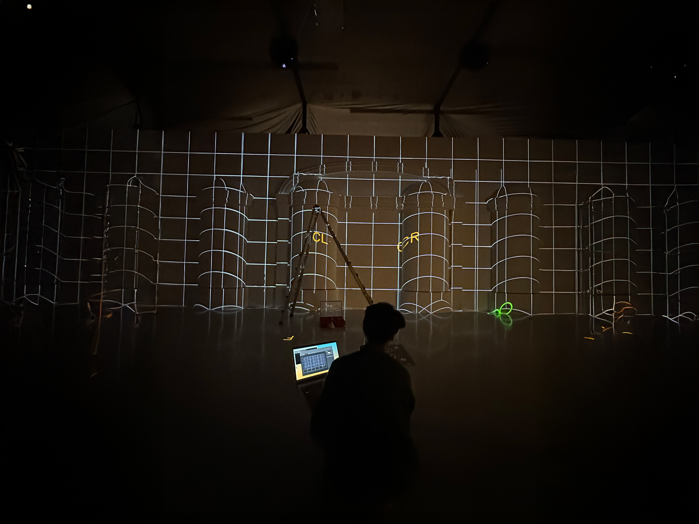
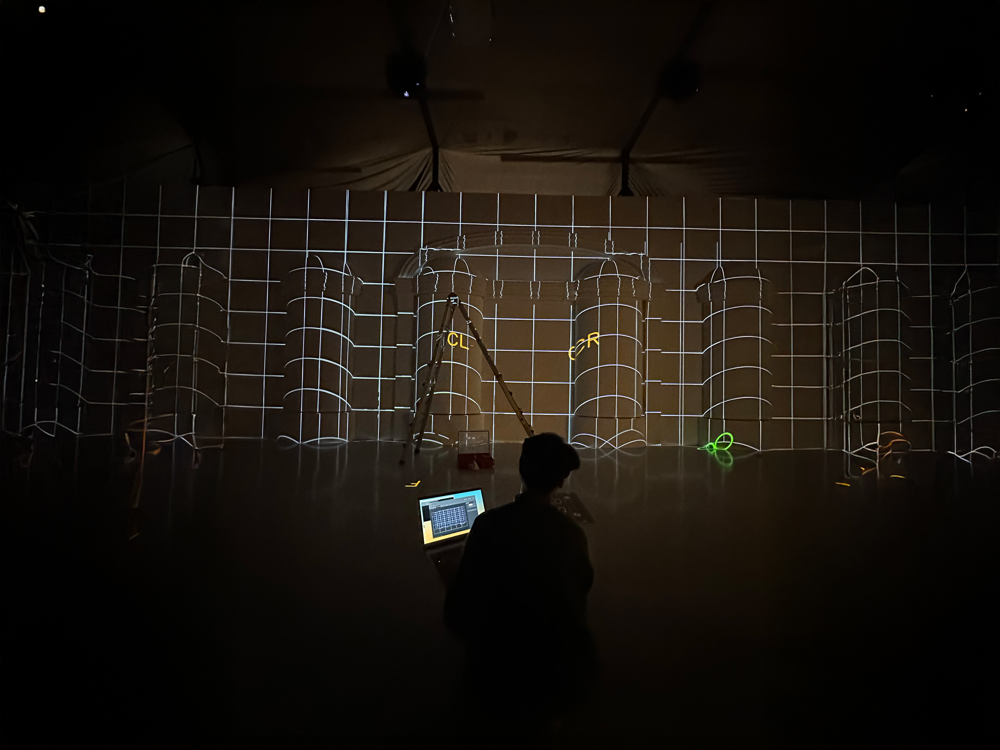

제이미는 2016년부터
초대형 미디어아트 전시영상을 진행해오며
돋보적인 기술과, 경험을 쌓아왔습니다.


제이미와 함께 한 수많은 고객들
미디어아트 제작사를 찾는 기준
3가지 딱 정리해드리겠습니다.
1. 컨텐츠 제작 범위
2. 하드웨어 가격 경쟁력
3. 현장 설치 및 돌발상황 대응
저희가 현장에서 경험하고 배우며 느낀미디어아트 제작사를 고르는 기준
3가지를 통해 고객 여러분들의 선택에 도움이 되었으면 합니다.
그렇다면 각 항목의 세부적인 체크 내용을 알아보시죠!
1. 컨텐츠 제작 범위
미디어아트 컨텐츠도 종류가 정말 다양합니다.


<다양한 표현 방식의 미디어아트, 언뜻 보기에는 무엇이 다른지 잘 알기 어렵다>
사실상 미디어아트 제작시에 고객분들이
가격을 조정할 수 있는 부분은 컨텐츠 부분이 유일합니다
중요한것은 고객의 니즈에 맞춰 공간의 분위기에 맞는 기획과 컨텐츠 입니다.
‘미디어아트'로 크게 묶어 컨텐츠를 이야기 하다보면 원하지 않는 지출이 발생하거나,
고객과 제작사 모두 필요없는 에너지를 소비하게 되는 경우가 많습니다.
때문에 제작사의 컨텐츠 제작 범위가 얼마나 다양한지 체크해보는 것이 좋습니다.
특정 스타일에 묶여있는 제작사라면 여러가지 면에서 협상이 어렵고
원하는 결과물에 도달하기도 쉽지 않은 것이 현실입니다.
제작사가 폭넓은 컨텐츠 제작이 가능한지 체크할 필요가 있습니다.


<저희는 3D부터 2D를 넘어 와이드 블랜딩 기술을 이용해 촬영까지 미디어아트로 적용시키고 있습니다>
저희는 하나의 표현방식에 국한되지 않고 다양한 방식을 통해 이머시브, 명화, 애니매틱, FOOH 까지 제작중에 있습니다.
2. 하드웨어 가격 경쟁력
하드웨어는 미디어아트 제작에서
가장 큰 견적을 차지하는 경우가 많은 만큼 신중하게 결정해야 합니다.
저희는 LED 및 빔프로젝터를 모두
경쟁력있는 가격에 설치하기 위한 컨소시엄을 구축했습니다.
그 중에서도 국내 파나소닉 빔프로젝터 총판과
전략적 협력 관계를 맺어 빔프로젝터의 납품단가 경쟁력을 갖추었습니다.


<야외 설치를 위한 외부함체 제작, 벽면 투사를 위한 천정 매립 등 다양한 현장에 대응>
빔프로젝터는 작게는 몇백만원에서 천만원대로 넘어가는 고가의 장비입니다.
(전시장 빔프로젝터 기준)
이런 고가의 장비에 5% 10% 정도만 마진이 붙게 되어도 고객의 입장에서는
큰 부담으로 돌아올 때가 많습니다.
특히나 나라장터를 이용해서 빔프로젝터를 구매하시는 고객들의 경우에는
적게는 2배 많게는 3배 이상의 금액을 지불하고 구매하게 되는 경우도 정말 많이 있습니다.
물론 하드웨어는 따로 구매하시고 컨텐츠나 구현만 문의 주시는 경우도 많습니다.
다만 저희가 하드웨어까지 경쟁력 있는 금액에 제공해드릴 수 있다는 사실을 알고는 많이 아쉬워하십니다. ^^;
3. 현장 설치 및 돌발상황 대응
미디어아트 설치 현장은 쉽게 말해서 공사장의 상황과 흡사하다고 보아도 무방합니다.
미디어아트는 단순히 멋진 영상을 만드는 것에서 끝나는 것이 아니라 다양한 설치 기술력과,
하드웨어의 조화로 이루어지는 복합 팀 프로젝트입니다.


 

<실장님들이 다양한 현장에서 작업중인 모습>
때문에 설치 과정중에 다른 설치팀과의 조율이항상 수반 되어야 하며
(인터렉션이 필요한 경우에는 더욱 강조되는 부분입니다).
컨텐츠 따로, 하드웨어 따로, 설치 및 소프트웨어 따로진행되는 경우가 많은데
가격 경쟁력이나 프로젝트의 효율이 많이 떨어지는 방식입니다.
3가지 파트가 모두 원활하게 커뮤니케이션 해가며
전체 견적의 틀 안에서 방법을 찾아나가는 팀과 함께 하셔야 합니다.


<고가의 소프트웨어가 아닌 국산 개발 툴로 작업중인 현장>
저희는 다양한 현장을 통해서 문제해결 경험을 해왔는데요.
현장경험의 영역은 아무리 강조해도 부족하지 않은 미디어아트 제작의 핵심중 하나입니다.

<현장 설치팀이 해결할 수 없는 돌발상황이 발생하여 컨텐츠팀이 현장에서 대신 해결하고 있는 모습>
이처럼 미디어아트 제작은 고려해야 할 부분들이 정말 많고
하나가 틀어지면 도미노처럼 전체가 휘청거릴 수 있는 팀 협업 프로젝트입니다.
때로는 빔프로젝터 50대로 구현한 현장이 매끄럽게 진행될 수도 있고,
때로는 빔프로젝터 2-3대로 구현한 현장도 어렵게 진행 될 수 있습니다.
오늘 말씀드린 3가지 포인트 잘 기억하시고,
미디어아트 제작사를 찾고 계시다면 꼭 한번 체크해보시기 바랍니다.
미디어아트 제작에 대해 궁금하신 점이 있으면 언제든지 문의해주세요.
문의하기